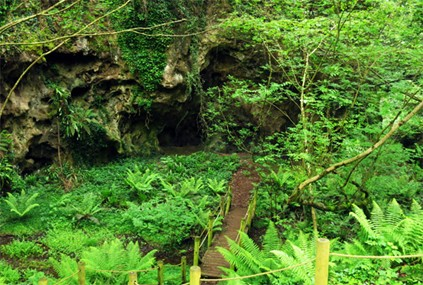
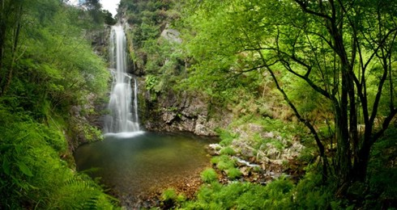
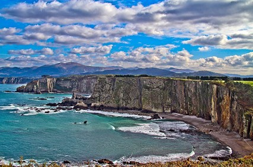
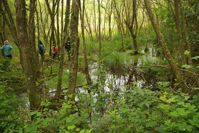
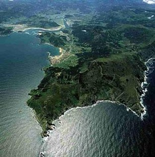

Cuevas de Andía
Muy cerca de Tapia y en plena naturaleza, estas cuevas guardan los restos de unas minas del siglo I d.C. La visita guiada, entre formas caprichosas y vegetación exuberante, es una experiencia que fascina a los niños. Reserva obligatoria. Tlf: 985 478 601 / 619 368 169.

Ruta Hoces del Esva
Una ruta que nos encanta por su versatilidad: puedes hacerla larga y circular o más corta en ida y vuelta. En ambos casos discurres por las imponentes gargantas del río Esva, con paisajes que quitan el aliento. Una de nuestras favoritas para los días que apetece caminar de verdad.

Ruta cascada del Cioyo
Si tuviéramos que elegir una sola ruta, probablemente sería esta. Un bosque mágico y autóctono te lleva de la mano hasta unas cascadas solitarias donde el tiempo parece detenerse. Duración inferior a dos horas y apta para niños con algo de precaución.

Senda del Cabo Busto
Una ruta cómoda y plana que discurre por la zona de acantilados con más altura de Asturias. Las vistas son absolutamente espectaculares. Perfecta para acabar el día o para quienes buscan paisaje sin esfuerzo.

Cascadas de Oneta
Un conjunto de tres cascadas situadas en el Ayuntamiento de Villayón, perfectas para un día tranquilo con toda la familia. El entorno natural que las rodea es una delicia en cualquier época del año.

Los Lagos de Silva
Situados a escasos metros de una costa virgen, estos lagos son en realidad los restos de una antigua explotación aurífera romana reconvertidos en un enclave de altísimo valor ambiental. Se puede llegar desde Tapia a pie por la ruta costera. En los últimos años, la lucha vecinal de la Plataforma ORO NO para proteger la zona de nuevas explotaciones mineras ha dado mucho que hablar y merece conocerse.

Estaca de Bares
Vale la pena madrugar y recorrer hora y media en coche para llegar al punto más septentrional de la Península Ibérica. Sus acantilados y la fuerza del Mar Cantábrico son una experiencia que se queda grabada. Por los alrededores, pequeños pueblos pesqueros como el Puerto de Bares tienen un encanto especial.
